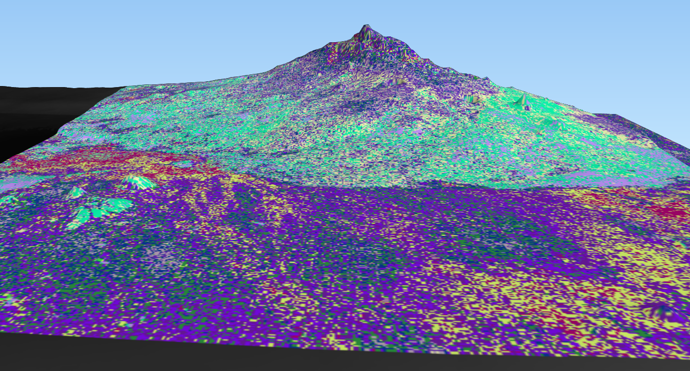
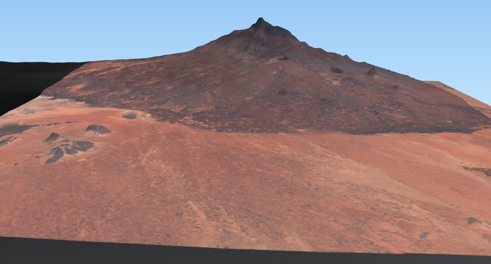
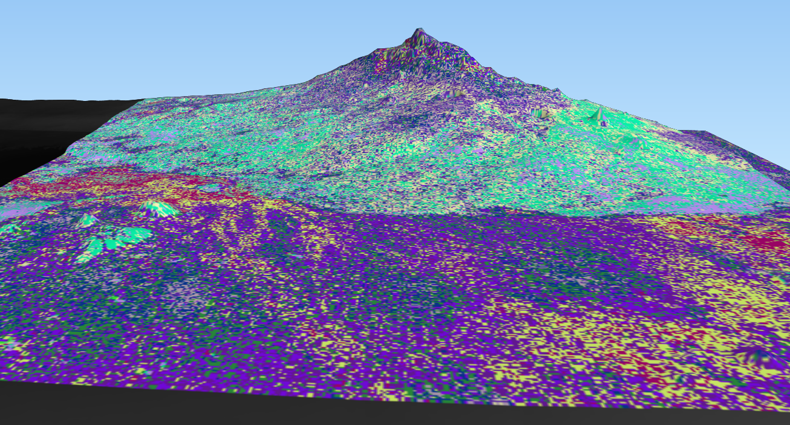
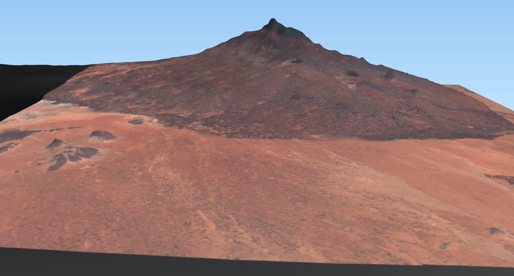

#### query the sentinel api
* make a request
* search the result
* get download link
* download and save file
request:
```python
#sentinel API
import requests
from requests.auth import HTTPBasicAuth
footprint = 'POLYGON((37.32548632535571 1.8491098129258177,38.06615104713074 1.8491098129258177,
38.06615104713074 2.582527953220037,37.32548632535571 2.582527953220037,37.32548632535571 1.8491098129258177))'
prodType = 'S2MSI2A' #,S2MSI1C, S2MS2Ap
days = '10'
API = 'https://scihub.copernicus.eu/dhus/
search?q=ingestiondate:[NOW-'+days+'DAY%20TO%20NOW]%20
AND%20producttype:'+prodType+'%20AND%20
footprint:"Intersects('+footprint+')"&%20rows=100&start=0&format=json'
r = requests.get(API,auth=('username', 'password'))
```
search the result:
```python
searchResult = r.json()
#searchResult
for scene in searchResult['feed']['entry']:
print (scene['title'])
print (scene['summary'])
print (scene['double'][6]) #cloudcover
print (scene['double'][7]) #cloudcover
print (scene['link'][0]['href'])
```
[Go live](http://localhost:8888/lab/tree/sentinelAPI.ipynb)
June 2018 vs March 2023 (S2 - RBG)

 June 2018 vs March 2023 (S2 - NDVI)
June 2018 vs March 2023 (S2 - NDVI)

 K-means(unsupervised) vs RGB


(TanDEM-X Elevation Model)
K-means(unsupervised) vs RGB


(TanDEM-X Elevation Model)